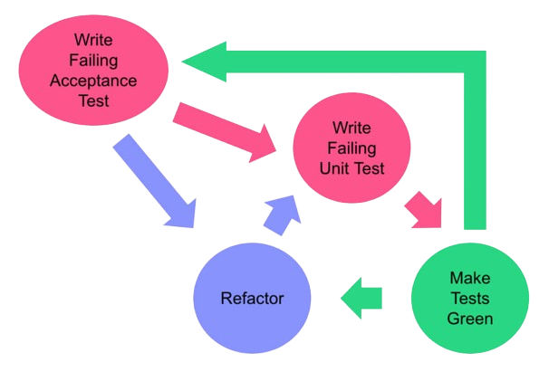

Acceptance Test-Driven Development (ATDD) on tarkvaraarenduse metoodika, mis keskendub kogu meeskonna osalusel loodud aksepteerimistestidele. See metoodika on suunatud sellele, et tagada tarkvara vastavus ärinõuetele ja kasutajate ootustele juba varases arendusfaasis.
ATDD protsess hõlmab koostööd ärimeeskonnaga, et määratleda selgeid ja arusaadavaid aksepteerimiskriteeriume iga funktsiooni või omaduse jaoks. Seejärel kirjutatakse aksepteerimistestid, mis kontrollivad, kas rakendus vastab nendele kriteeriumidele.
Üks ATDD olulisemaid eeliseid on parem arusaamine nõuetest kogu meeskonna poolt ja kiirem tagasiside ärimeeskonnalt. See aitab vähendada kommunikatsiooniprobleeme ja tagab, et arendus toimub õigel kursil.
Lisaks aitab Acceptance Test-Driven Development ennetada vigu ja vähendada arenduskulutusi, kuna avastatakse ja lahendatakse probleemid juba varases staadiumis, enne kui need muutuvad kulukaks ja aeganõudvaks.
Lõpuks, ATDD soodustab ka iteratiivset arengut, kus aksepteerimistestide põhjal toimub tarkvara funktsionaalsuse järkjärguline täiustamine ja täiendamine vastavalt kasutajate tagasisidele ja muutuvatele äri vajadustele.